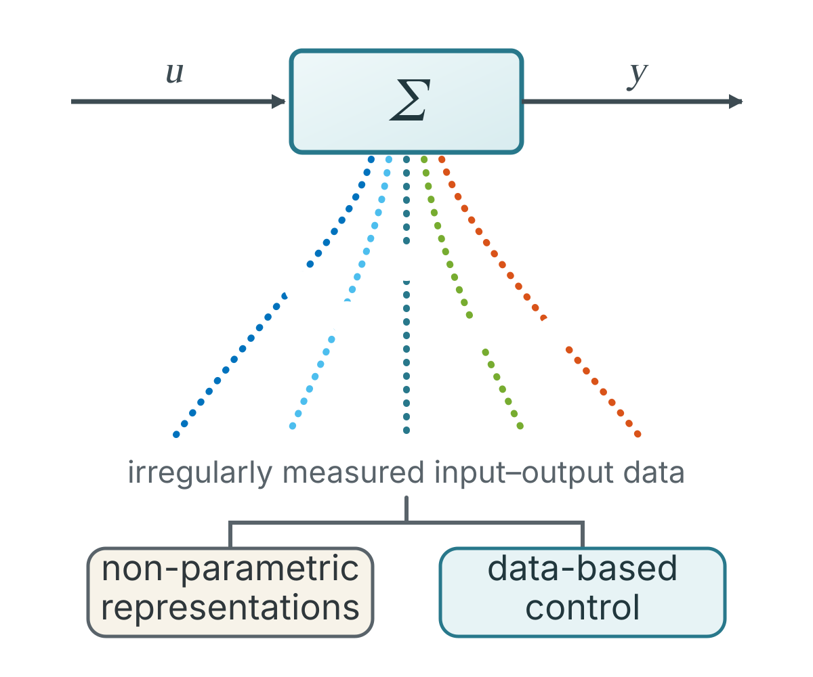

Data-based representations and output-feedback control
How can we represent, analyze, and control a dynamical system using only short, noisy, and potentially irregularly measured input–output data?
Why it matters. A mathematical model is not always available, and collecting long, perfectly sampled datasets may be expensive or simply impossible. Working directly with measured data can make analysis and controller design possible when conventional model-based methods are difficult to use.
My work. I develop data-based representations that capture the behavior of linear systems from limited input–output measurements. My contributions also address missing samples, the design of sufficiently informative experiments, and output-feedback control of multivariable systems directly from data.
Representative work
